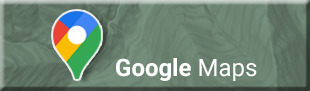

Home
|
Family History
|
Klemmetsrud History
|
Wilderness Explorations
|
Decajoule

NEWS
WEATHER
MAPS/TRAVEL
TV/MOVIES
NPR
-
PBS
Indianola
Google Earth
Netflix
-
HBO
CNN
-
MSNBC
Poulsbo
-
Kingston
ONP
-
ONF
Xfinity Stream
The Guardian
Bainbridge
-
Seabeck
WTA
-
DNR
Paramount+
-
Disney
New York Times
Quilcene
-
Brinnon
US Geological Survey
Prime
-
Fandango
Seattle Times
Hoodsport
-
Quinault
GPS Visualizer
TiVo
-
TV Listings
Seattle PI
Sequim
-
Port Angeles
Find Altitude
IMDb
-
Python
Kitsap Sun
Lake Crescent
-
Forks
Peak Finder
Rotten Tomatoes
Kitsap Daily News
Seattle
-
Mt Rainier
Grade Percent Calculator
NOAA Tides
-
King5 Radar
Olympic Range (elevations)
COMMUNICATIONS
SEARCH/SHOP
NWS
-
Snow Depth
NW Waterfall Survey
Verizon
-
Comcast
WhitePages
-
Carrier
Mtn Forecast
-
Webcam
Kitsap Waterfall Survey
GoDaddy
Amazon
-
eBay
Weather Ch
-
SNOTEL Map
Great Peninsula Conservancy
USPS
-
UPS
Cafe Press
-
Vistaprint
AirNow.gov
-
Windy PM2.5
NK Trails Association
Date and Time
Craigslist
-
Etsy
Parcel Maps
-
ayvri
Library
-
WorldCat
SCIENCE
Forest Roads
-
Kitsap Roads
WORKPLACE
Wikipedia
iNaturalist
-
Aurora
Hood Canal Bridge
Comagine
Ancestry
Space.com
-
Star Chart
WADOT
-
WA State Ferries
IslandWood